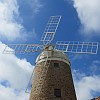
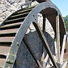

|
 |  |
| Jèrriais | Angliais | Français |
| lé moulîn | the mill | le moulin |
| la reue du moulîn | mill wheel | la roue du moulin |
| la meule | millstone | la meule |
| lé moulîn' à ieau | watermill | un moulin à eau |
| lé moulîn' à vent | windmill | un moulin à vent |
| lé bié, lé byi | leat, millstream | le bief |
| du blié | barley | de l'orge |
| lé fronment | wheat | le froment |
| du grain | corn | du blé |
| d'l'avaine | oats | de l'avoine |
| d'la flieu | flour | de la farine |
| du grain | grain | du grain |
| moudre | to grind | moudre |
| la trémie | hopper | la trémie |
| m'suther | measure | mesurer |
| lé monnyi | miller | le meunier |
| la monniéthe | miller's wife | la meunière |
| l'êcliuse | mill pond | la retenue |
| eune pouque | sack | un sac |
| eune dgèrbe | sheaf | une gerbe |
| un tas | stack | un tas |
| lé canné | stream | le courant du bief |
| dg'ieau | water | de l'eau |
| p'ser | weigh | peser |
| eune p'sée | weight (for weighing) | un poids |
| l'aube | sail (of windmill), paddle (of wheel) | l'aube |
| moudre | to grind | moudre |
| la reue | wheel | la roue |
| lé moulîn' à flieu | flour mill | le moulin à farine |
| la flieu | flour | la farine |
| lé no | water chute | l'abée |
| la trappe | trapdoor, trap | la trappe |
| la trappe à ieau | gate (water) | la bonde |
| l'êclioteûthe | sluice | la bonde d'écluse |
| lé cliatchet | clacking sound of mill | le claquet de moulin |
| l's allichons | teeth of wheel | le dents de roue à moulin |
| la moututhe | grist, milled grain | la mouture |
| la grain'nie | granary | le grenier à blé |
| l'engrénage d'la reue d'moulîn | millwheel gearing | l'engrenage |
| la reue à dents | cogwheel | la roue dentée |
| lé gîndas | hoist | le monte-sac |
| la cranne | crane | la grue |
| les balanches | scales | la balance |
| lé tro du moulîn | bin hopper | la huche |
| lé tro à ieau | water chute | le caniveau |
| lé rouet | main wheel | l'engrenage du moulin |
| l'arbre du moulîn | mainshaft | l'arbre du moulin |
| un hale-bran | a dishonest miller | un meunier malhonnête |
| lé moueu | axle | le moyeu |
| lé venteux | winnowing machine | le tarare |
| venter | to winnow | vanner |
| lé fronmentais | wheat chaff | la paille de froment battu |
| l'av'née | oat chaff | la paille d'avoine |
| un aûgyi | bucket (of wheel) | un auget |
| lé bran | bran | le bran |
| la blianche flieu | white flour | la fleur de farine |
| la flieu d'gros | wheatmeal | la farine complète |
| la reue à aubes | paddle wheel | la roue à aubes |
| la reue à aûgièrs | bucket wheel | la roue à augets |
Viyiz étout: